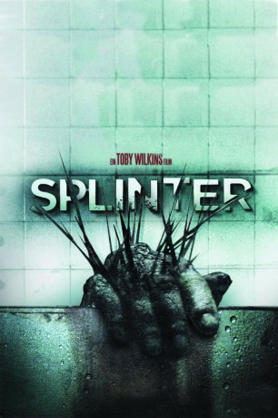

#7600 Splinter
 
 IMDB-Wertung: 6.1 / 10
IMDB-Wertung: 6.1 / 10  Tomatometer: 74
Tomatometer: 74  Metascore: 0
Metascore: 0 
Ein junges Pärchen reist durch die ländliche Provinz, als man von einem anderen Pärchen gestoppt wird, das offenbar in der Wildnis eine Panne hatte. Doch die Anhalter entpuppen sich als Gauner und nehmen das Pärchen als Geiseln, möchten eine Mitfahrt erpressen in die große Stadt. Das Schicksal aber hat andere Pläne, schickt erst eine Panne, dann kein Benzin und schließlich eine scheußliche Seuche, die vor keinerlei Lebewesen vom Dachs bis zum Tankwart halt macht und ansteckender ist als ein herzhaftes Gähnen.
Jahr: 2008
Dauer: 82 Minuten
FSK: 16
Land: USA Studio: Magnet ReleasingTonspuren: DTS - ,
Untertitel: Deutsch,
Auflösung: 1080p (1920x816) Größe: 6307 MB
Genre: Thriller, Horror, Sci-Fi
Regisseur: Toby Wilkins
Drehbuch: Ian Shorr
Soundtrack: Jason Evigan
Darsteller:
 Charles Baker als Blake Sherman Jr.
Charles Baker als Blake Sherman Jr.- Jill Wagner als Polly Watt
- Paulo Costanzo als Seth Belzer
 Shea Whigham als Dennis Farell
Shea Whigham als Dennis Farell- Rachel Kerbs als Lacey Belisle
- Laurel Whitsett als Sheriff Terri Frankel
Datei: X:\2008(N-Z)\Splinter (2008, FSK16, 1920x816).mkv seit 22.11.2017
Festplatte: HD 2008(G-Z)-2009(A-F)
 Es gibt insgesamt 91 Filme in der Gruppe '2008(N-Z)'
Es gibt insgesamt 91 Filme in der Gruppe '2008(N-Z)'